System Requirements
Using Ramom QR Attendence, you must have running Ramom Multi Branch School Management System version 7.0 or its newer version on your server. Below are a list of items you should ensure before using Ramom QR-Code Attendence.
- Ramom Multi Branch School Management System version 7.0.0 or its newer version pre installed on your server
Installation
Please follow the below steps to complete the installation process of the Ramom QR Attendence Addon.
* Always backup your all files and database before Installing Ramom QR Attendence Addons.
01. If you are running the latest version 7.0 or greater than 7.0 of Ramom Multi Branch School Management System, You are now ready to install the addon.
02. First Download "Ramom QR Attendence Addon" from CodeCanyon. Now extract and open main_script.zip.
03. Login as Superadmin and Goto Addon Manager and click Install Addon Tabs.
Enter your Addon purchase code here. Do not use here to Ramom School Purchase code.
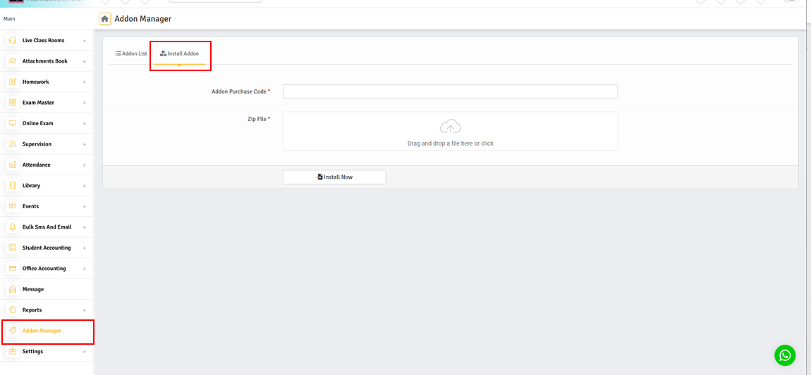
04. You will get two folders inside the downloaded file. One is for documentation and the other is for the addon file. No need to change anything like renaming, removing, etc
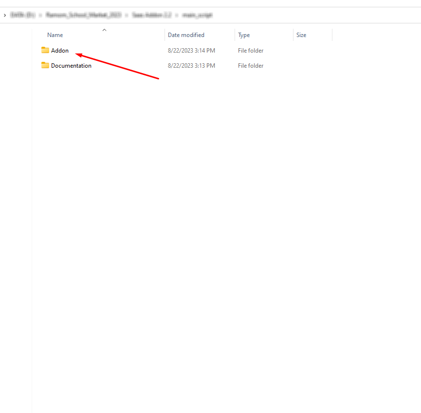
06. You just need to upload the ramom_qr_attendence_addon.zip file. After that hit the Install Now button. You will get a success message notification and window will reload automatically in 5 seconds and you can also see the newly installed addon on the Addon List there.
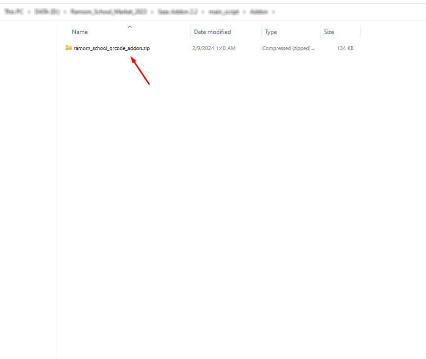
07. Now Clear the cache of your browser and login to SuperAdmin Panel and check if everything is Done...
01. Getting Started
First of all you need to print ID card with QR code. Login to a role that has permission to print "ID Cards". First you need to create a template. Go to Card Management > Id Card Templete and you can see the templete page and you click "Add Id Card" tab button.
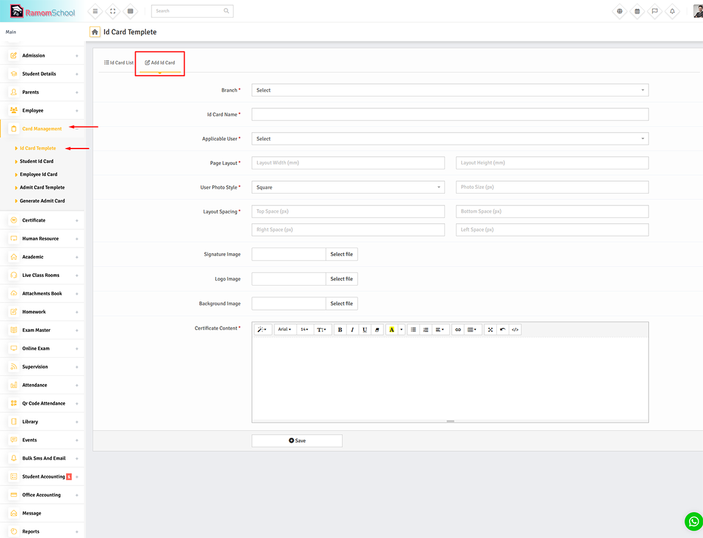
"QR Code Attendance" must be selected in place of QR Code text and you can create ID card template as per your choice for ID card.
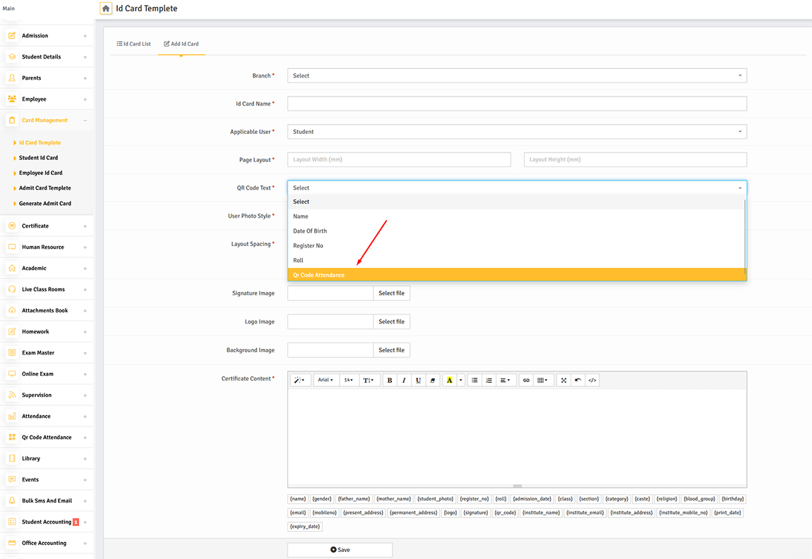
And finally you can print-out user ID cards.
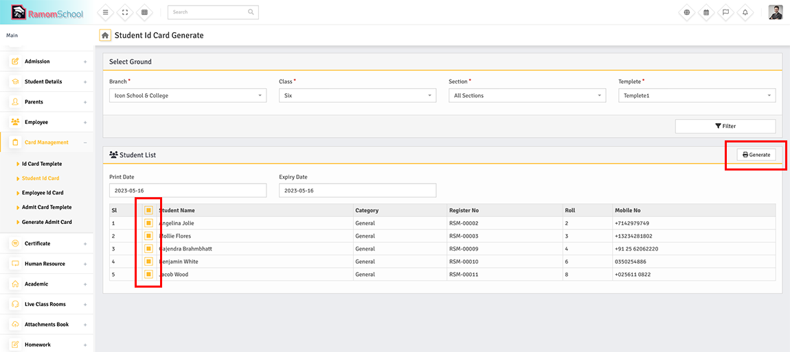
Go to Qr Code Attendance > Settings and you can configure it according to your needs.
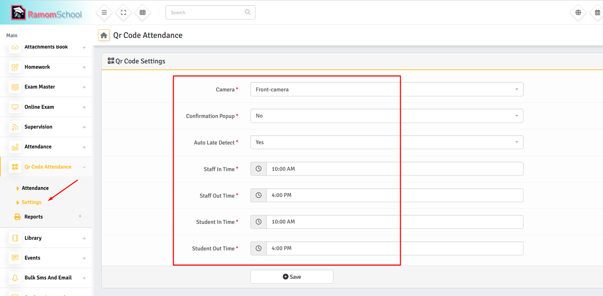
02. How to Scan Student ID Card QR Code and Take Attendance?
First Login to a role that has permission to take Student Qr Code Attendance. Then Goto Qr Code Attendance > Student and allow camera access permission to the Ramom school app (No third-party apps are required).
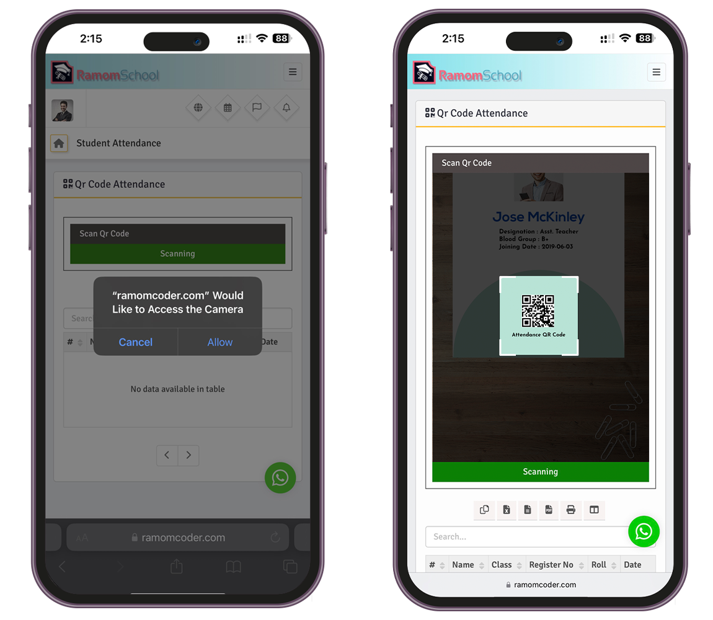
You will not need to select Branch Class, Section, Date or anything else. If the ID card is scanned properly, You will get a confirmation popup with student details. You can checked the Late checkbox if student late and also write remark.
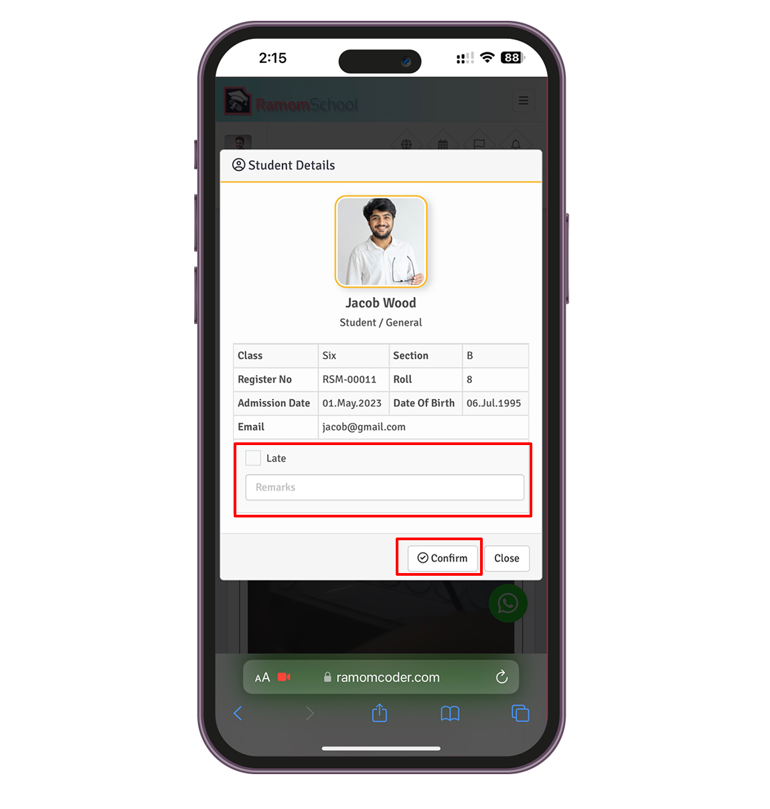
03. How to Scan Employees ID Card and Take Attendance?
First Login to a role that has permission to take Employees Qr Code Attendance. Then Goto Qr Code Attendance > Employee and allow camera access permission to the Ramom school app (No third-party apps are required).
*Also you must carefully select employee In Time or Out Time.
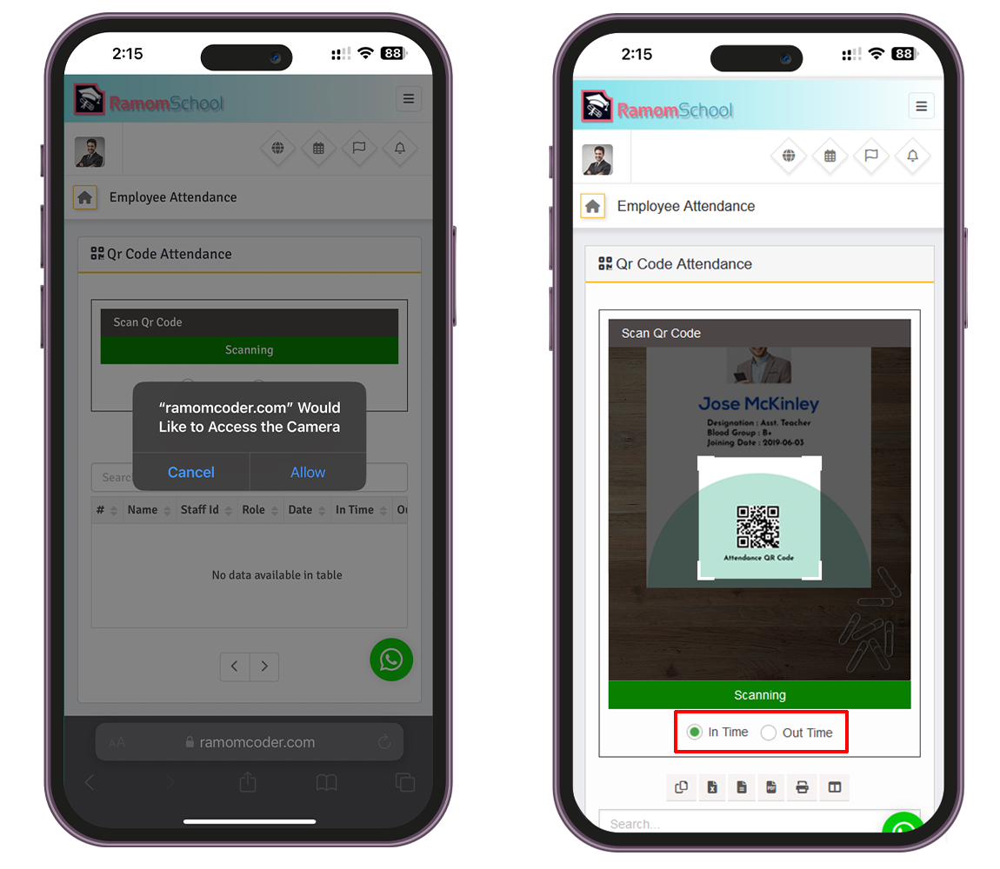
You will not need to select Branch, Role, Date or anything else. If the ID card is scanned properly, You will get a confirmation popup with student details. You can checked the Late checkbox if student late and also write remark.
* If you select In Time You can checked the Late checkbox if Employee late and also write remark.
* If you select Out Time You can checked the Half Day checkbox if the employee is on half day duty then.
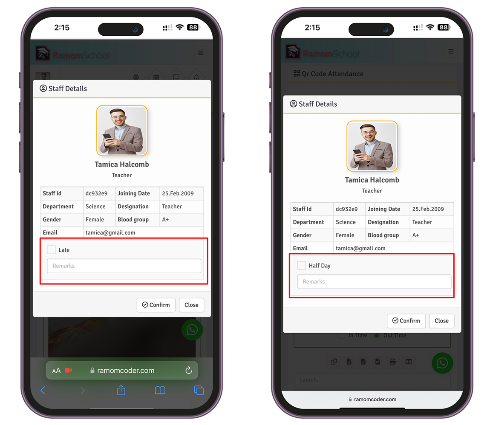
04. Auto Student Attendance Submission.
The auto submission feature will automatically mark students as absent and will send SMS notifications to parents, if they do not submit attendance within your scheduled time.
You just Go to Qr Code Attendance > Submission Settings and set specific school time for each class and section and click on the Save button.
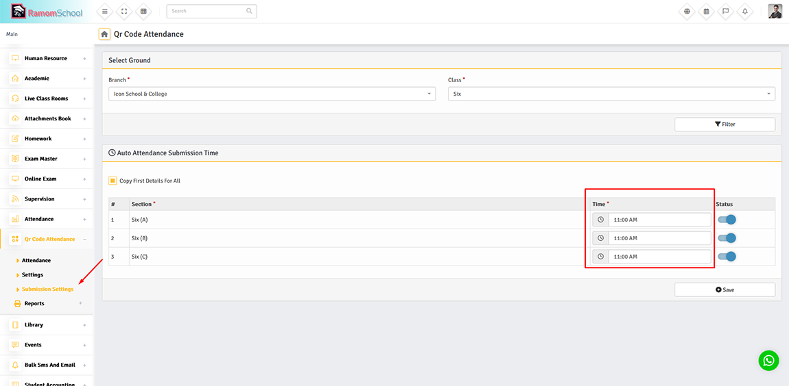
* To enable this feature, make sure your server's cron job is configured to run every
10 minutes with the following command:
curl http://yourdomain.com/qrcode_auto_submission/cron_job/your-secret-key
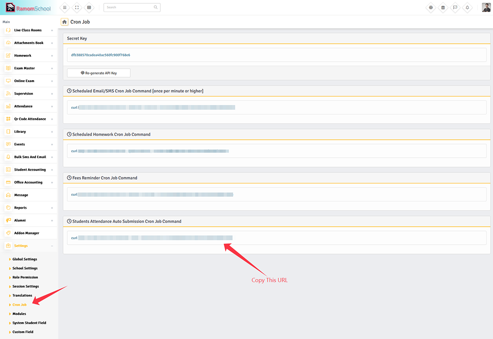
05. QR Code Attendance Reports.
Student QR Code Attendance Reports.
Get Student report of QR code attendance, First Login to a role that has permission to take QR Code Student Report.
Then Goto Qr Code Attendance > Reports > Student Reports By Date.
Only those students will be shown here, whose attendance is taken through QR code.
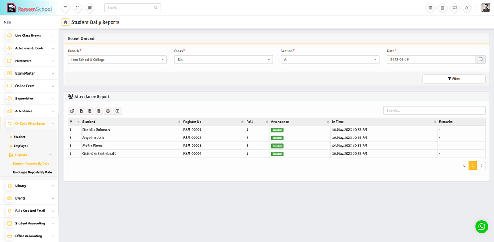
Employees QR Code Attendance Reports.
Get Employees report of QR code attendance, First Login to a role that has permission to take QR Code Employees Report.
Then Goto Qr Code Attendance > Reports > Employees Reports By Date.
Only those Employees will be shown here, whose attendance is taken through QR code.
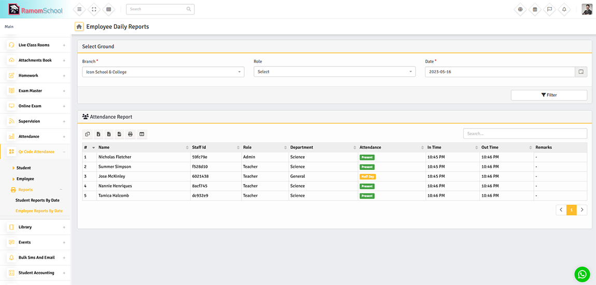
Also the Attendance of the users you take through the QR code will affect all of the attendance reports in the system.
QR code attendance and manual attendance will appear in the same report.
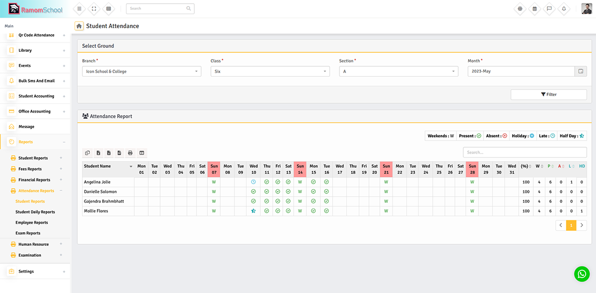
Changelog
Version 3.0 – 31, December, 2025
- Addad Auto Attendance Submission.
- Added SMS notification to parents of absent students.
- Addad Compatible Ramom Multi Branch School v7.0.
- Updated Server-Side Datatables.
- Fixed Attendance Datatables exporting issues.
- Fixed All Known Bugs and Enhance Performance.
Version 2.0 – 08, Februbary, 2024
- Addad Addon Is Now Installable.
- Added Automatically Identifies Students Or Staff.
- Added Automatically Take Attendance, No Confirmation Pop-Up Required (Configurable).
- Added Automatically Detect Late / Half Day.
- Added Front And Rear Camera Configurable.
- Added In Time and Out Time of Students.
- Fixed All Known Bugs and Enhance Performance.
Version 1.0 – 17, May, 2023
- Initialize release
Customer Support
I hope you will enjoy using this software! We provide customer support through the Support Ticket System. If you encounter any technical issues, open a support ticket and our technical team will be happy to assist you and solve it.
* Please note that support does not cover script customizations or third-party plugins. For advanced modifications, we recommend hiring a third-party developer or using our customization service.
Once again, thanks for purchasing Ramom QR-Code Attendence Addon.